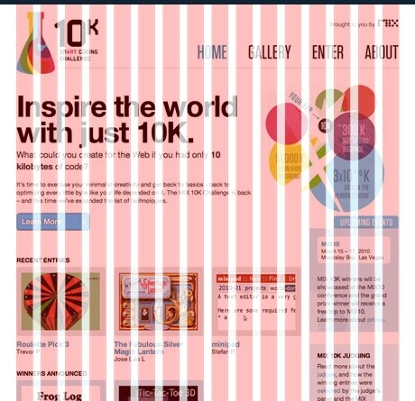

HTML 레퍼런스 북
그리드 시스템
그리드 시스템(Grid System)에서 ‘Grid’는 격자나 바둑판 모양의 눈금을 뜻하며 일반적으로는 수직과 수평으로 면이 분할된 것을 의미합니다.
그리드 시스템은 디자인의 레이아웃에 규칙을 부여하는 수단입니다. 편집디자인(인쇄물)에서 시작해 현재 웹 개발 분야에도 적용하여 웹 페이지를 제작하는 기초 단계에서 그리드 시스템을 사용하면 제작을 쉽고 빠르게 진행할 수 있습니다.
그리드 시스템의 장점
디자인 레이아웃은 모든 측정값이 동일한 규칙을 따르면 자동으로보다 일관된 UI를 얻게 됩니다. 그리드 시스템은 균일한 요소와 간격을 사용하여 플랫폼, 환경 및 화면 크기에 일관성을 부여하고 그래픽 요소의 체계적인 배열을 도와줍니다.
또한 협업의 목적으로 내부의 기준을 정하는 것에 도움이 되며, 또한 반응형 디자인의 경우 해상도 대응이 쉬워지고 디자이너와 개발자 사이의 쉬운 커뮤니케이션 시스템이 됩니다.
그리드 시스템의 기본 요소
- 칼럼(Columns)
실제로 컨텐츠를 포함하는 부분은 칼럼이라고 합니다. 칼럼의 넓이는 고정된 값으로 제공되며, 1개 이상의 칼럼이 조합하여 컨텐츠의 크기를 결정합니다. 그리고 하나의 칼럼 안에는 반드시 양 옆에 여백, 즉 거터를 동반합니다. - 거터(Gutters)
거터는 칼럼과 칼럼사이의 공간입니다. 1개 이상의 칼럼이 조합된 컨텐츠와 컨텐츠 사이의 간격이 됩니다. 거터의 넓이 역시 고정 값으로 제공하며, 스크린의 너비에 비례하여 넓은 거터는 큰 스크린에 적합니다. 칼럼사이에 공백을 더 많이 생성하기 때문입니다. - 마진(Margins)
여백은 내용과 화면의 왼쪽 및 오른쪽 가장자리 사이의 공간입니다. 여백 너비의 넓이도 고정 값으로 정의되며, 여백 역시 큰 여백은 내용의 둘레에 더 많은 공백을 만들기 때문에 큰 스크린에 적합니다.
그리드 시스템 예시
